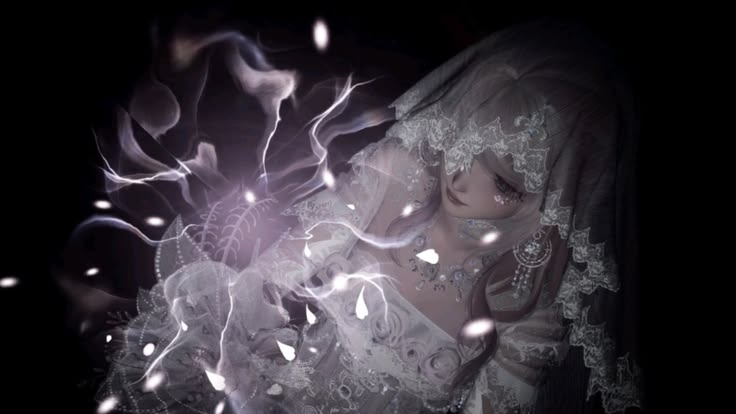
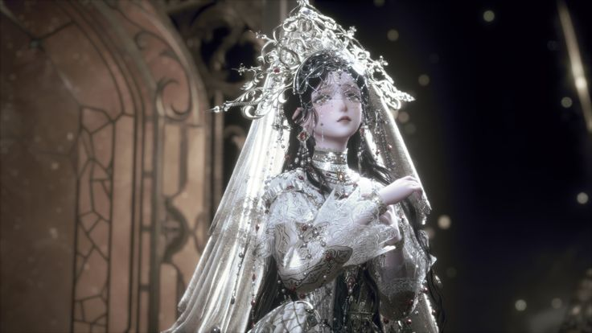

搭配為王：奇蹟大陸上的一切競爭、文明發展與命運抉擇，都離不開服裝設計與搭配能力。
以「服裝搭配與美學」為至高文明法則的奇幻世界， 世界觀中充滿了美學的傳承與湮滅，歷史與奇蹟往往透過服裝的力量被書寫或遺忘
「搭配即是世界，記憶編織文明。」
整個奇蹟大陸主要由七大風格迥異的國度與諸多特色城鎮
當代與未來文明： 包含主打現代都市潮流與商業活力的蘋果聯邦， 以及隱匿海外、高度仰賴 ai 與高科技數據的賽博朋克之地廢墟孤島。
古典與童話藝術： 包含崇尚童話美學與蘿莉塔甜美風的莉莉斯王國， 傳承千年中式刺繡與古風韻味的雲端帝國，以及融合西洋宮廷、精靈與魔法信仰的信鴿王國。
野性與極限風土： 包含終年積雪、講求軍紀與生存極簡風格的極北北地王國， 以及由沙漠綠洲部落組成、崇敬自然圖騰與星象的荒原共和國。

「每一件服裝，都是文明的呼吸與靈魂的記憶。」
從雲端信鴿的古典奢華、莉莉斯與心願小鎮的甜美田園，
到蘋果廢墟的現代未來，以及北地荒原的野性風土——奇蹟大陸將七國文明化為服飾語言，
以搭配之力編織出獨一無二的風格史詩。

隱於禱音
披上華服，戴上冠冕，她是被族人選中的聖女，寄託著喚回神明的希冀。
石壇冰冷，星辰低垂，無人聽見高塔之上，那些日夜不息的禱告。
此後，世間再無她的名。
白夜長旋舞
華燈傾瀉下金輝，照亮她的第一場獻禮。
她於萬眾驚嘆中抬臂旋身，黑裙劃開黃金時代最輝煌的長夜。
她是巨人王座前最完美的奇蹟，也是黃金時代最值得誇耀的發明。
無名亦無我
細聽月光朦朧的低語，它告知她，有流離的記憶散落空庭。
於是她在連綿不斷的咒頌聲間，拾起一個個屬於自己的名字。